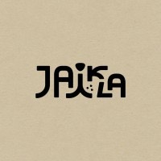
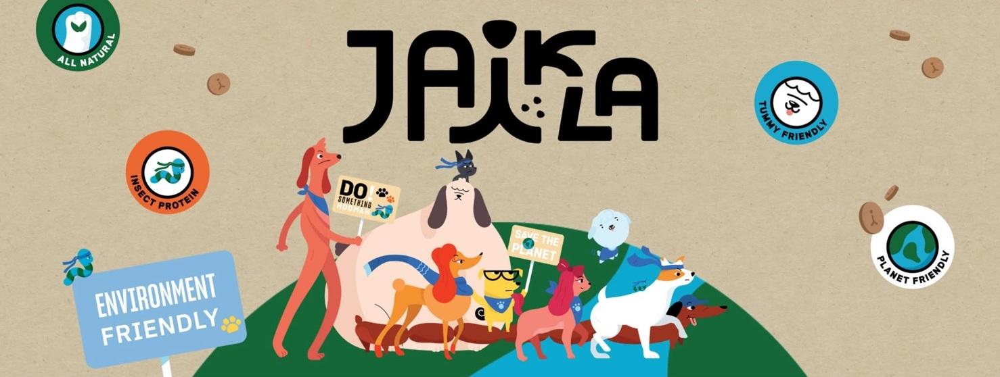

References

Official website JAIKLA
Official Website
Official Instagram
Instagram
STP
STP Reference 1
STP Reference 2
Mode of Entry
JAIKLA Facebook
Urban Creature TH
สถิติจำนวนคนรักสุนัขในเมือง【中国十大爱狗省市榜！市场达1557亿元，北上广深宠物经济爆发|广州|广东|犬类|养宠|宠物狗|宠物犬_网易订阅】
宠小哥 小红书号：6943447996
สถิติการเลี้ยงสุนัข【2025宠物经济洞察报告：1.24亿只宠物重构3000亿“人宠共生”新市场_财富号_东方财富网】
PESTEL Analysis
CHINA PET FOOD MARKET SIZE & SHARE ANALYSIS - GROWTH TRENDS AND FORECAST (2026 - 2031)
Report: Over 80% of Chinese pet owners use Douyin to livestream pet products
กฎระเบียบฉบับใหม่เกี่ยวกับการนำเข้าอาหารสัตว์ของจีน
MARA จีนเปิดร่างมาตรฐานบังคับฉลากอาหารสัตว์เลี้ยง (สุนัข/แมว) รับความเห็นถึง 10 ต.ค. 2568
Official website JAIKLA
宠物饲料（宠物食品）进口合规分析
4P
抖音消费群体数据分析怎么写
京东7亿用户背后的秘密：30%高频增长如何炼成？
京东用户的城市分布
小红书活跃人群分析
2026年中国昆虫基蛋白宠物食品行业市场动态分析及产业前景研判报告